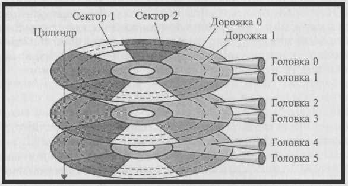
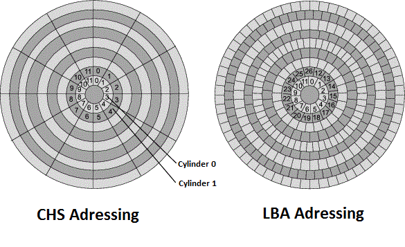
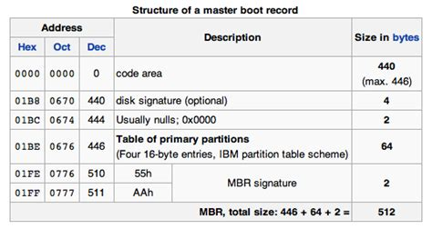
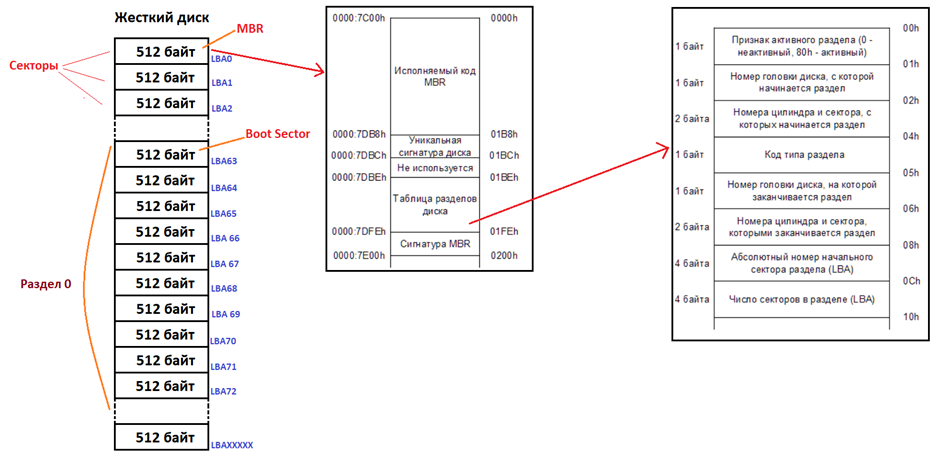
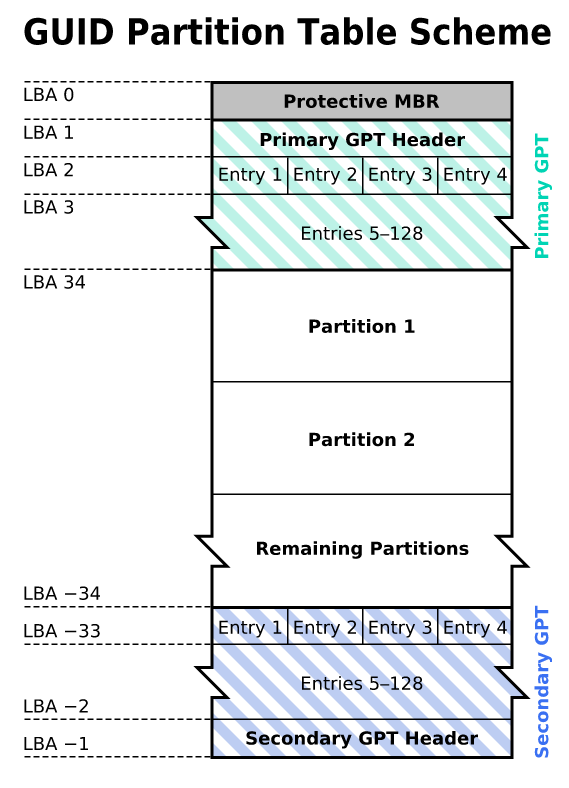
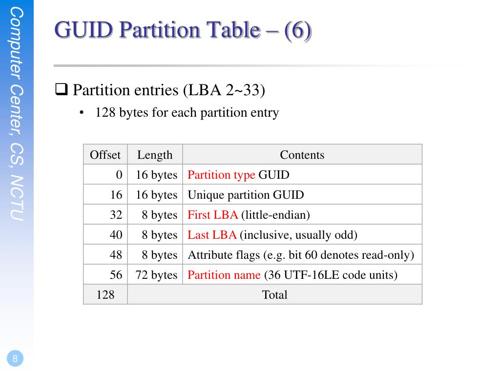
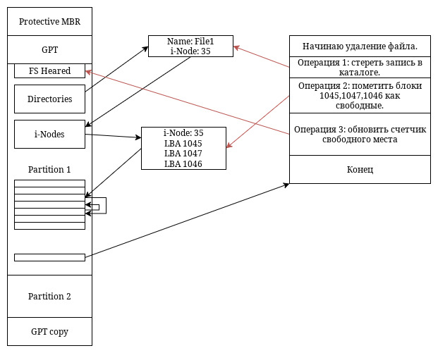
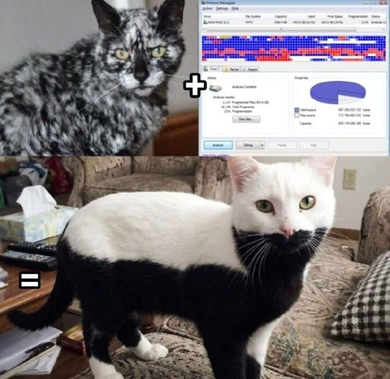

Лекция 1. Управление дисками и разметка: MBR против GPT
Введение
На обзорной лекции мы с вами уже начали знакомство с миром систем хранения
данных. Сегодня мы сделаем самый важный шаг — опустимся на уровень ниже файловой
системы и поговорим о том, как устроен диск с точки зрения операционной системы
до того, как на нем появились папки и файлы.
Представьте, что жёсткий диск — это большая библиотека, а операционная система — библиотекарь.
Чтобы библиотекарь мог быстро найти книгу, нужны стеллажи, полки и каталог.
В мире дисков это называется разметка диска и файловая
система.
Сегодня мы разберём, какие бывают стандарты разметки (MBR и GPT), как устроены разделы
и какие файловые системы сейчас используются.
Часть 1. Физическое и логическое устройство диска
1.1 Геометрия HDD (CHS)
В старые времена, когда жесткие диски были простыми, адресовать данные можно
было напрямую, указав три координаты:
- C (Cylinder) — Цилиндр: Все дорожки, находящиеся друг над
другом на разных пластинах.
- H (Head) — Головка: Номер головки (и соответственно,
поверхности пластины).
- S (Sector) — Сектор: Сегмент дорожки (обычно 512 байт).
Этот метод называется CHS-адресацией. Он был удобен для BIOS и ранних ОС, но имел
серьезные ограничения. В современных дисках плотность записи настолько
высока, а количество секторов на внешних и внутренних дорожках отличается
настолько сильно, что «цилиндры» как физическая единица потеряли смысл.

1.2 Логическая адресация (LBA)
На смену CHS пришла адресация LBA (Logical Block Addressing). Теперь диск
представляется операционной системе просто как сплошной массив логических
блоков. Каждый блок имеет свой порядковый номер (LBA 0, LBA 1, LBA 2 и т.д.), а размер блока
обычно составляет 512 байт или 4096 байт (4K сектора).
- LBA 0 — это самый первый сектор на диске.
- Контроллер диска сам отвечает за то, на какой физический цилиндр/головку/сектор
попадет запись с LBA-адресом N.
Именно с LBA мы и будем работать в контексте разметки.

1.3 Сектора и блоки
- Сектор: Минимальная физическая единица записи для диска.
Диск не может записать меньше одного сектора. Исторически — 512 байт, сейчас
стандарт де-факто — 4096 байт (Advanced Format).
- Блок: Минимальная логическая единица для файловой системы и
операционной системы. Обычно равен или кратен размеру сектора.
Часть 2. Таблица разделов MBR
MBR (Master Boot Record) — главная загрузочная запись. Это стандарт, который использовался
с начала 80-х годов и до сих пор широко распространен. Он находится в самом
первом секторе диска (LBA 0).
2.1 Структура MBR (512 байт)
Сектор MBR занимает ровно 512 байт и делится на три части:
- Загрузочный код (Bootloader code) — первые 446 байт.
Здесь находится первичный загрузчик (например, первая стадия GRUB в Linux или
загрузчик Windows). Если диск не является загрузочным, этот код может
отсутствовать или быть неактивным.
- Таблица разделов (Partition Table) — следующие 64 байта.
Это самое главное для нас. Таблица содержит 4 записи, каждая размером 16 байт.
Каждая запись описывает один раздел.
- Почему 4? Это историческое ограничение. Именно поэтому MBR называют
«основной загрузочной записью с 4 первичными разделами».
- Сигнатура (Boot signature) — последние 2 байта.
Это «магическое число» 0x55AA. Оно сообщает компьютеру, что данный
сектор действительно является загрузочным и содержит корректный MBR.

2.2 Что содержится в 16-байтной записи о разделе?
Каждая из 4-х записей в таблице содержит ключевую информацию:
- Тип раздела (1 байт): Указывает, какая файловая система
предполагается в разделе или его роль (например,
0x83 — Linux
Native (ext2/3/4), 0x82 — Linux Swap, 0x07 — NTFS).
- Флаг загрузки (1 байт):
0x80 — раздел активный
(загрузочный), 0x00 — неактивный.
- Координаты начала и конца раздела (CHS): 3 байта на начало,
3 байта на конец. Это данные для обратной совместимости.
- LBA-адрес начала раздела (4 байта): Номер первого сектора
раздела.
- Размер раздела в секторах (4 байта): Количество секторов,
отведенных под раздел.
Главная проблема MBR кроется в этих двух 4-байтовых полях.
- Чтобы задать адрес сектора, используя 4 байта, максимум, что мы можем адресовать —
это 2^32 секторов.
- >Если размер сектора = 512 байт, то максимальный размер диска, который можно
разметить MBR, составляет:
- 2^32 * 512 байт = 2^32 * 0.5 КБ = 2^41 байт = 2 ТБ
(Терабайта) ровно.
- Если диск физически больше 2 ТБ, лишнее пространство просто пропадет, либо будет
использоваться с обходными маневрами, что чревато проблемами.

2.3 Расширенные и логические разделы
Как быть, если нужно больше 4 разделов? MBR предлагает обходной путь:
- Первичные (Primary) разделы: До 4 штук. Могут быть
загрузочными.
- Расширенный (Extended) раздел: Один из первичных разделов
помечается как расширенный. Он работает как «контейнер».
- Логические (Logical) разделы: Внутри расширенного раздела
создается цепочка так называемых EBR (Extended Boot Records), которые позволяют
создать много логических дисков.
Это костыль, усложняющий управление, но он работает до сих пор.
Часть 3. Таблица разделов GPT
GPT (GUID Partition Table) — часть спецификации UEFI, пришедшей на смену устаревшему BIOS.
Это современный стандарт, лишенный недостатков MBR.
3.1 Структура GPT
GPT не помещается в один сектор. Она занимает несколько секторов в начале и в конце диска
(для резервирования).
- Защитный MBR (LBA 0):
Для совместимости со старыми программами, которые не знают о GPT, в самом первом
секторе записывается «фиктивный» MBR. В его таблице разделов указано, что весь
диск занят одним разделом неизвестного типа. Это защищает диск GPT от случайной
перезаписи утилитами, понимающими только MBR.
- Заголовок GPT (LBA 1):
Содержит:
- Сигнатуру ("EFI PART").
- Номер версии.
- Размер самой таблицы разделов.
- Указатели на начало и конец таблицы разделов
(основной и резервной копии).
- CRC32 (контрольную сумму) самого заголовка и таблицы разделов. Если данные
повреждены, система узнает об этом.
- GUID диска (уникальный идентификатор).
- Таблица разделов (обычно LBA 2..33):
Здесь находятся записи о разделах. По умолчанию зарезервировано место под 128
записей. Каждая запись имеет размер 128 байт.
- Разделы (Data Partitions):
Сами области данных.
- Резервная копия (Backup GPT):
В самом конце диска дублируется таблица разделов и заголовок. Это огромный плюс
к надежности. Если заголовок в начале диска повредится, система может
восстановиться из резервной копии в конце.

3.2 Содержимое записи о разделе в GPT (128 байт)
Информация о разделе в GPT гораздо богаче:
- GUID типа раздела (16 байт): Вместо одного байта (как в
MBR) используется UUID. Это позволяет точно идентифицировать тип раздела.
- Например, GUID для раздела с данными в Linux —
0FC63DAF-8483-4772-8E79-3D69D8477DE4.
- >Для системного раздела EFI —
C12A7328-F81F-11D2-BA4B-00A0C93EC93B.
- Уникальный GUID раздела (16 байт): Каждый раздел имеет свой
собственный уникальный идентификатор.
- Начало раздела (8 байт): LBA-адрес начала.
- Конец раздела (8 байт): LBA-адрес конца.
- Атрибуты (8 байт): Флаги (например, запрет на монтирование
по умолчанию).
- Имя раздела (72 байта): Разделу можно дать человекочитаемое
имя (например, "System", "Data", "Backups").

3.3 Преимущества GPT
- Снято ограничение в 2 ТБ: 8 байт на адресацию позволяют
адресовать диски размером до 9.4 Зеттабайт (при 512-байтных секторах). Этого
хватит надолго.
- Нет ограничения в 4 раздела: Можно создавать тысячи разделов
(стандартно 128, но можно и больше, если изменить размер таблицы). Нет понятий
«первичный/логический».
- Резервирование: Таблица разделов хранится в двух экземплярах
(в начале и в конце диска).
- Контроль целостности: Заголовок и таблица защищены CRC32.
Если система видит несовпадение контрольных сумм, она может попытаться
восстановиться из резервной копии.
- Единый стандарт: Лучше работает с UEFI, поддерживается всеми
современными ОС.
Часть 4. Сравнение MBR и GPT
Давайте сведем ключевые отличия в таблицу для наглядности.
| Характеристика |
MBR |
GPT |
| Макс. размер диска |
2 ТБ |
9,4 Збайт (практически безгранично) |
| Кол-во разделов |
4 первичных (или 3 первичных + расширенный с логическими) |
128 по умолчанию (можно больше) |
| Резервная копия |
Нет (только один MBR в начале) |
Да (в начале и в конце диска) |
| Контроль целостности |
Нет |
Да (CRC32) |
| Идентификация |
1-байтовый тип раздела |
GUID типа раздела + GUID самого раздела |
| Имя раздела |
Нет |
Да (до 36 символов Unicode) |
| Режим загрузки |
Legacy BIOS (CSM) |
UEFI |
| Совместимость |
Максимальная, но устаревшая |
Современный стандарт |
Когда что выбирать?
- MBR стоит использовать только для:
- Загрузки в режиме совместимости с BIOS (Legacy) на старых компьютерах.
- Съемных носителей малого объема (флешки до 2 ТБ), которые могут быть
вставлены в очень старое оборудование.
- GPT — выбор по умолчанию для:
- Всех современных компьютеров с UEFI.
- Дисков размером более 2 ТБ.
- Систем, где важна надежность и отказоустойчивость таблицы разделов.
Часть 5. Инструменты для работы с разделами (5 минут)
На практических занятиях вы будете работать с тремя основными инструментами.
fdisk
- Классическая утилита для DOS/Windows, позже портированная в Linux.
- Работает с MBR, имеет простой интерактивный интерфейс (команды типа
n - новый раздел, d - удалить,
w - записать).
- Может работать и с GPT, но это не его "родная" стихия.
gdisk (GPT fdisk)
- Аналог fdisk, но заточенный под GPT.
- Имеет схожий интерфейс, но понимает все особенности GPT (GUID, имена
разделов).
- Может конвертировать MBR в GPT (с осторожностью).
parted
- Более мощная и продвинутая утилита из GNU-проекта.
- Поддерживает и MBR, и GPT «из коробки».
- Работает как в интерактивном режиме, так и в режиме прямых команд (удобно
для скриптов).
Например: parted /dev/sda mkpart
primary ext4 1MB 1000MB.
Все эти утилиты требуют прав суперпользователя (root).
Резюме и вопросы
Ключевые выводы:
- Прежде чем на диске появится файловая система, на нем должна быть создана таблица
разделов.
- Существует два основных стандарта: устаревший MBR и современный GPT.
- MBR прост, но ограничен: максимум 2 ТБ и всего 4 первичных раздела (с костылями для
обхода).
- GPT — это будущее: диски огромных размеров, множество разделов, встроенная защита и
резервирование.
- Выбор таблицы разделов зависит от типа загрузчика (BIOS/UEFI) и размера диска.
Вопросы для самопроверки (можно задать аудитории):
- Почему нельзя установить Windows на диск размером 3 ТБ, размеченный в MBR, и
использовать весь его объем?
- Сколько первичных разделов можно создать на диске с GPT? А логических?
- Что произойдет, если повредится первый сектор (LBA 0) на диске с GPT? Будет ли диск
читаем?
- Какую таблицу разделов вы выберете для загрузочной флешки с Linux, которая должна
запускаться на компьютерах 2005 года выпуска?
На следующем практическом занятии мы возьмем виртуальные диски и руками создадим на них обе
таблицы разделов, чтобы увидеть разницу на практике.
Лекция 2. Файловые системы
Файловая система (ФС) определяет способ организации, хранения и именования данных на носителях
информации. Она управляет доступом к файлам, хранит метаданные (размер, время создания, права
доступа) и распределяет место на диске. Выбор файловой системы критически влияет на
производительность, надежность и совместимость системы хранения данных.
В данной лекции мы рассмотрим ключевые характеристики наиболее популярных файловых систем.
1. FAT32 (File Allocation Table, 32-bit)
- Происхождение: Развитие более ранних версий FAT (FAT12,
FAT16). Представлена в 1996 году с выходом Windows 95 OSR2.
- Область применения: Универсальная совместимость. USB-флешки,
SD-карты (до 32 ГБ), встроенные системы (Embedded), мультимедийные устройства.
Ключевые особенности:
- Простейшая архитектура с таблицей размещения файлов (File Allocation Table) в начале
тома.
- Максимальный размер тома: 2 ТБ (теоретически, практически часто ограничивается 32 ГБ в
инструментах Windows).
- Максимальный размер файла: 4 ГБ (минус 1 байт). Это главное и критическое ограничение
для современных задач (например, нельзя записать образ DVD или фильм в 4K
UltraHD).
- Не поддерживает журналирование (см. ниже).
- Не поддерживает права доступа (POSIX-права) и расширенные атрибуты файлов.
Достоинства:
- Максимальная совместимость: Поддерживается всеми версиями
Windows, macOS, Linux, а также бытовой техникой (телевизоры, автомагнитолы,
принтеры) и игровыми консолями без установки дополнительных драйверов.
- Низкие накладные расходы на хранение метаданных.
Недостатки:
- Высокая уязвимость к ошибкам. При сбое питания или неправильном извлечении диска
велика вероятность потери данных или целых директорий.
- Фрагментация файлов со временем приводит к снижению скорости чтения/записи на
магнитных HDD.
- Отсутствие поддержки современных функций (символические ссылки, сжатие,
шифрование).
2. exFAT (Extended File Allocation Table)
- Происхождение: Разработана Microsoft в 2006 году для
флеш-накопителей как замена FAT32.
- Область применения: SD-карты большого объема (SDXC),
большие внешние жесткие диски, там, где нужна совместимость между Windows и
macOS без потери производительности.
Ключевые особенности:
- Оптимизирована для флеш-памяти (уменьшено количество перезаписей одной и той
же ячейки).
- Сняты ограничения FAT32: максимальный размер файла и тома теоретически достигают
16 Эксбайт (на практике ограничивается реализацией ОС).
- >Не поддерживает журналирование.
- Поддержка списков контроля доступа (ACL) реализована не полностью по сравнению
с NTFS.
Достоинства:
- Компромисс между совместимостью и функциональностью:
Поддерживается Windows (встроено), macOS (встроено), Linux (через пакет
fuse-exfat или драйверы).
- Низкая фрагментация и высокая скорость работы на флеш-носителях.
- Позволяет хранить файлы размером более 4 ГБ (например, образы дисков или
базы данных).
Недостатки:
- Меньшая надежность, чем у журналируемых ФС (NTFS, ext4) из-за отсутствия журнала.
- Менее широкий функционал, чем у "родных" систем (NTFS для Windows, ext4 для
Linux).
- Патентная история (раньше была проприетарной, сейчас лицензирование Microsoft
упростилось, но в некоторых Linux-дистрибутивах поддержка может отсутствовать
"из коробки").
3. NTFS (New Technology File System)
- Происхождение: Разработана Microsoft для Windows NT
(1993 г.). Пришла на смену HPFS.
- Область применения: Основная файловая система для системных
и внутренних дисков в ОС семейства Windows (от XP до Windows 11).
Ключевые особенности:
- Журналируемость: Ведет журнал (журнал $LogFile), в который
записываются изменения до их фактического выполнения. Это позволяет восстановить
целостность ФС при сбоях.
- Огромные лимиты: размер тома до 16 ЭБ, размер файла до 16 ЭБ.
- Поддержка альтернативных потоков данных (ADS), позволяющих хранить метаданные или
скрывать данные внутри обычного файла.
- Встроенное сжатие, шифрование (EFS), дисковые квоты, жесткие и символические ссылки,
списки доступа (ACL).
- Мастер-файл таблицы (MFT) — централизованная база данных всех файлов тома.
Достоинства:
- Надежность и отказоустойчивость.
- Гибкость и богатый функционал для корпоративной среды (безопасность, квоты).
- Хорошая производительность на больших томах.
Недостатки:
- Более высокая фрагментация на HDD со временем (требуется дефрагментация).
- Меньшая производительность на очень мелких файлах по сравнению с некоторыми
Linux-ФС.
- Поддержка в macOS только на чтение (запись возможна с дополнительным ПО, например,
Paragon или Tuxera).
- Высокий расход места на служебные структуры (MFT резервирует 12.5% тома).
4. ext4 (Fourth Extended File System)
- Происхождение: Преемник ext3, обратно совместим с ним.
Стабильный релиз с 2008 года. Стандартная ФС для многих дистрибутивов Linux.
- Область применения: Системные и пользовательские разделы
Linux, серверы, десктопы, встраиваемые системы на Linux.
Ключевые особенности:
- Журналируемость: Поддерживает несколько режимов журналирования
(только метаданные, полные данные).
- Использование экстентов (extents) вместо традиционной блочной карты. Экстент — это
непрерывная последовательность блоков, что ускоряет работу с большими файлами и
уменьшает фрагментацию.
- Поддержка мультиблочного выделения (multiblock allocation), отложенного выделения
(delayed allocation), что оптимизирует запись данных.
- Поддержка расширенных атрибутов и квот.
- Максимальный размер тома: 1 ЭБ, файла: 16 ТБ.
Достоинства:
- Высокая стабильность и зрелость.
- Хорошая производительность как для малых, так и для больших файлов.
- Надежность и проверенность временем.
- Инструменты для онлайн-дефрагментации и увеличения размера (расширения) тома без
размонтирования.
Недостатки:
- Отсутствие встроенной поддержки "снимков состояния" (снапшотов) и
дедупликации (требуются менеджеры томов LVM).
- При отложенном выделении есть риск потери данных при сбое питания (данные, еще не
записанные на диск, могут быть утеряны).
- Не поддерживает контрольные суммы (checksum) в журнале и метаданных (в отличие от
ZFS/Btrfs).
5. APFS (Apple File System)
- Происхождение: Разработана Apple в 2016-2017 годах для
замены устаревшей HFS+ (Mac OS Extended).
- Область применения: Все устройства Apple: macOS (начиная
с High Sierra), iOS, tvOS, watchOS.
Ключевые особенности:
- Оптимизирована для флеш-накопителей (SSD) и NVMe (поддержка TRIM, команды очистки).
- Клонирование (копирование при записи): Мгновенное создание
копий файлов и папок без занятия дополнительного места (CoW — Copy-on-Write).
- Снапшоты: Создание моментальных снимков тома для резервного
копирования (встроено в Time Machine).
- Шифрование: Полноценная поддержка шифрования на уровне файлов
(многоуровневое, с несколькими ключами).
- Сжатие: Прозрачное сжатие данных.
Достоинства:
- Максимальная производительность на SSD.
- Надежность за счет механизма Copy-on-Write.
- Тесная интеграция с экосистемой Apple (клонирование файлов, снапшоты для бэкапов).
Недостатки:
- Закрытая экосистема. Нативный доступ только из macOS. В Windows и Linux (через
сторонние утилиты) поддержка либо на чтение, либо нестабильна.
- На магнитных жестких дисках (HDD) производительность может быть ниже, чем у HFS+
из-за особенностей алгоритмов, заточенных под SSD.
6. XFS
- Происхождение: Разработана компанией SGI (Silicon Graphics)
для IRIX в 1994 году, портирована в Linux в начале 2000-х.
- Область применения: Высоконагруженные системы, серверы баз
данных, видео-редактирование, системы, требующие высокой масштабируемости и
параллельного ввода-вывода.
Ключевые особенности:
- Высокопроизводительная 64-битная журналируемая ФС.
- Экстремальная масштабируемость: поддерживает тома до 8 ЭБ, файлы до 8 ЭБ.
- Использует технологию выделения групп (allocation groups) для параллельной обработки
операций ввода-вывода (хорошо масштабируется на многоядерных процессорах).
- Поддерживает расширенные атрибуты и квоты.
- Журналирование только метаданных (по умолчанию), что обеспечивает высокую скорость
записи.
Достоинства:
- Очень высокая производительность при работе с большими файлами.
- Отличная масштабируемость и параллельность.
- Позволяет увеличивать размер тома "на лету" (без размонтирования).
Недостатки:
- Нельзя уменьшить размер тома (сжатие не поддерживается,
только увеличение).
- При сбое питания с включенным кэшированием записи риск потери данных, если файл
был открыт на запись.
- Менее эффективна при работе с огромным количеством очень маленьких файлов по
сравнению с ext4 (хотя современные версии это улучшили).
7. BtrFS (B-tree File System, часто произносят
"Better FS" или "Butter FS")
- Происхождение: Разрабатывается компаниями Oracle, Red Hat,
Fujitsu и др. с 2007 года. Призвана стать аналогом ZFS в мире Linux.
- Область применения: Системы, требующие гибкости управления
томами, встроенной защиты данных, снапшотов.
Ключевые особенности:
- Copy-on-Write (CoW): Копирование файлов происходит мгновенно,
создание снапшотов практически бесплатно по месту.
- Встроенный менеджер томов: Позволяет объединять несколько
дисков в пулы, создавать RAID-массивы (0, 1, 5, 6, 10) на уровне ФС.
- Снапшоты и откат: Мгновенное создание снимков состояния
системы.
- Контрольные суммы (checksum): Данные и метаданные проверяются
контрольными суммами, что позволяет обнаруживать "тихое" повреждение
данных (bit rot).
- Сжатие и дедупликация: Прозрачное сжатие (zstd, lzo) и
дедупликация данных на лету.
Достоинства:
- Огромный функционал "из коробки".
- Самовосстановление (self-healing) при использовании RAID-конфигураций.
- Гибкость управления томами без необходимости в LVM или mdadm.
Недостатки:
- Зрелость: Долгое время имела статус "нестабильной"
или "экспериментальной" (особенно для RAID5/6). Ситуация улучшается,
но до сих пор требует осторожности на критически важных данных.
- Фрагментация данных из-за механизма CoW, особенно на заполняющихся дисках.
- Производительность может "проседать" на некоторых сценариях по сравнению
с ext4 или XFS.
8. ZFS (Zettabyte File System)
- Происхождение: Разработана Sun Microsystems (ныне Oracle)
для Solaris в 2005 году. Портирована во FreeBSD, Linux (OpenZFS), macOS.
- Область применения: Системы хранения корпоративного уровня
(NAS, SAN), файловые серверы с большими массивами дисков, архивы данных, где
требуется максимальная сохранность.
Ключевые особенности:
- Объединение ФС и менеджера томов: Как и Btrfs, но
концептуально более строгая и первая в своем роде.
- 128-битная архитектура: Практически бесконечные лимиты по
размеру и количеству файлов.
- Copy-on-Write (CoW): Фундаментальный принцип работы.
- Максимальная защита данных: Контрольные суммы для всех данных
и метаданных. При использовании RAID-Z (аналог RAID5, но без "дыры
записи") позволяет автоматически исправлять повреждения.
- Пулы хранения (zpools): Объединение дисков в пулы, из которых
можно выделять отдельные тома (datasets).
- Дедупликация, сжатие, снапшоты, клонирование, репликация.
Достоинства:
- Абсолютная надежность и целостность данных (защита от битовой гнили).
- Зрелость кода (особенно в Solaris/FreeBSD, OpenZFS активно развивается).
- Максимальная функциональность для больших хранилищ.
- Поддержка кэширования на быстрых SSD (L2ARC) и отдельного журнала (ZIL) на SSD.
Недостатки:
- Высокое потребление оперативной памяти (рекомендуется 1 ГБ ОЗУ на 1 ТБ дискового
пространства для нормальной работы кэша ARC).
- Сложность в настройке и администрировании для новичков.
- Невозможность уменьшить размер пула/тома (можно только добавлять диски или заменять
их на более емкие).
- Сложности с лицензированием (CDDL) в ядре Linux (несовместимость с GPL), что требует
отдельной сборки ядра или использования модулей.
Сравнение файловых систем
| ФС |
Макс. размер тома |
Макс. размер файла |
Журнал |
ОС |
Применение |
| FAT32 |
2 ТБ |
4 ГБ |
нет |
Все (Win, Linux, Mac) |
Флешки, загрузочные разделы UEFI |
| exFAT |
128 ПБ |
16 ЭБ |
нет |
Win, Linux
(c пакетом), Mac |
Карты памяти, внешние диски |
| NTFS |
256 ТБ |
16 ТБ |
есть |
Win (родная), Linux RW,Mac RO |
Системные диски Windows |
| ext4 |
1 ЭБ |
16 ТБ |
есть |
Linux (родная), Win/Mac
— спец.ПО |
Системные диски Linux |
| APFS |
huge |
huge |
CoW |
MacOS, iOS |
SSD в Mac, iPhone, iPad |
| XFS |
8 ЭБ |
8 ЭБ |
есть |
Linux |
Серверы, медиа, БД |
| BtrFS |
16 ЭБ |
16 ЭБ |
есть |
Linux |
Системные диски Linux |
| ZFS |
256 трилл. ПБ |
16 ЭБ |
есть |
(с пакетом), FreeBSD, Mac |
Хранилища данных, NAS, гипервизоры |
Журналирование и Copy-on-Write в файловых системах
Цель: Обеспечение целостности файловой системы и данных при сбоях (отключение питания, крах ядра, аппаратные ошибки).
Часть 1. Журналирование (Journaling)
Журналирование — это метод, используемый в классических файловых системах, таких как
ext3, ext4, XFS, NTFS.
1.1 Проблема, которую решает журналирование
Представьте, что вы удаляете файл размером 100 МБ. Файловая система должна выполнить
множество операций:
- Удалить запись о файле из каталога.
- Пометить блоки данных как свободные в битовой карте.
- Обновить счетчик свободного места.
Если в середине этого процесса отключится питание, файловая система останется в
противоречивом (несогласованном) состоянии. Например, блоки уже помечены
как свободные, но запись в каталоге еще указывает на них (или наоборот). При следующей загрузке
потребуется долгая проверка (fsck), которая может занять часы на
терабайтных томах.
1.2 Как работает журнал
Журналирование вводит понятие журнала — специальной области на
диске (отдельный файл или скрытая область), которая работает по принципу упреждающей записи
(write-ahead logging).
Алгоритм работы:
- Транзакция (Журнал): Перед тем как вносить изменения в
основную структуру файловой системы (в метаданные), все операции, которые мы
собираемся сделать, записываются в журнал как одна транзакция. Запись в журнал
синхронная.
Пример:
- Начинаю удаление файла.
- Операция 1: стереть запись в каталоге.
- Операция 2: пометить блоки 1045-1047 как свободные.
- Операция 3: обновить счетчик свободного места.
- Конец.
- Фиксация (Commit): Когда транзакция полностью записана в
журнал, ставится пометка «фиксация» (commit). Это означает, что операция теперь
гарантированно сохранена в надежном месте.
- Воспроизведение (Checkpoint): После фиксации данные из
журнала переносятся (воспроизводятся) на свои реальные места в файловой системе.
Этот процесс называется контрольной точкой (checkpoint).
- Очистка: После успешного переноса данные в журнале помечаются
как устаревшие и могут быть перезаписаны.

1.3 Режимы журналирования
Разные файловые системы предлагают разные уровни журналирования, которые влияют на
производительность и безопасность:
- Journal (Полное журналирование):
- В журнал пишутся и метаданные, и данные (содержимое
файлов).
- Плюс: Максимальная безопасность. При сбое не потеряется ни один файл.
- Минус: Очень медленно (двойная запись всего подряд). Практически не
используется.
- Ordered (Упорядоченный режим) — режим по умолчанию в
ext3/ext4:
- В журнал пишутся только метаданные.
- Важное условие: Перед тем как зафиксировать
изменение метаданных в журнале, сами данные файла гарантированно
записываются на диск.
- Логика: Сначала физически сохраняем файл, потом помечаем в журнале, что
он появился.
- Плюс: Хороший баланс скорости и надежности. При сбое структура папок будет
цела, но в файлах может быть мусор (если запись данных прервалась).
Writeback (Обратная запись):
- В журнал пишутся только метаданные.
- Данные могут быть записаны как до, так и после метаданных (порядок не
гарантируется).
- Плюс: Самый быстрый режим.
- Минус: Высокий риск. Если после записи метаданных, но до записи данных
пропадет питание, мы увидим файл с правильным именем и размером, но
читающийся как мусор (так как блоки данных не были записаны).
1.4 Восстановление после сбоя
При монтировании файловой системы после сбоя она проверяет журнал:
- Если есть незавершенные, но зафиксированные транзакции — они применяются к
основной ФС.
- Если есть незавершенные и не зафиксированные транзакции — они отбрасываются.
Это занимает секунды, а не часы, как полная проверкаfsck.
Часть 2. Copy-on-Write (CoW) — Копирование при записи
CoW — это фундаментально иной подход, используемый в современных
файловых системах, таких как ZFS, Btrfs, Bcachefs.
2.1 Основной принцип
В традиционных файловых системах (в том числе и в журналируемых) при изменении данных они
часто перезаписываются поверх старых. Если в момент перезаписи
случится сбой, данные будут испорчены.
CoW работает иначе: никогда не перезаписывает существующие данные
на месте.
Алгоритм работы при изменении файла:
- Файл состоит из нескольких блоков данных, на которые указывают метаданные (иноды).
- Вы хотите изменить блок "B" на новое значение "B1".
- Система не трогает старый блок "B". Она находит
свободное место на диске и записывает туда новую версию блока "B1".
- После того как новая версия успешно записана на диск, система атомарно обновляет
указатели в метаданных: теперь они указывают на новый блок "B1".
Старый блок "B" становится "сиротой".
- Только после обновления указателей старый блок помечается как свободный (и будет
переиспользован позже сборщиком мусора).
2.2 Как это обеспечивает целостность (консистентность)
Благодаря этому принципу, файловая система на основе CoW всегда находится в
непротиворечивом состоянии.
- Если сбой произошел ДО записи новых блоков: метаданные всё
еще указывают на старые, неповрежденные данные. Файл остался в исходном
состоянии.
- Если сбой произошел ПОСЛЕ записи новых блоков, но ДО обновления
метаданных: то же самое — метаданные указывают на старые данные. Новые
блоки есть на диске, но на них никто не ссылается (они будут подчищены позже).
- Если сбой произошел ВО ВРЕМЯ обновления метаданных:
современные реализации CoW используют трюки с записью, гарантирующие, что
обновление указателей происходит атомарно (либо всё новое, либо всё старое).
Журнал в классическом понимании CoW-системам не нужен, так как они никогда не оставляют структуры данных в "полузаписанном" состоянии.
2.3 Дополнительные возможности CoW
Сам факт того, что старые данные не удаляются сразу, открывает дорогу для мощных функций:
- Снимки (Snapshots):
- Мгновенный снимок состояния файловой системы делается очень просто: мы просто
запрещаем сборщику мусора удалять блоки, на которые указывает
"старая" версия корневой структуры каталогов.
- Теперь у нас есть два набора указателей: текущий (на новые данные) и снимок
(на старые данные). Физически данные общие до тех пор, пока они не
меняются.
- Дедупликация (Deduplication):
- Если два файла содержат одинаковые блоки данных, CoW-система может настроить
указатели обоих файлов на один и тот же физический блок. При изменении
одного из файлов сработает CoW — для изменяемого файла будет создана
новая копия блока.
- Сжатие (Compression):
- Данные можно сжимать в памяти перед записью на диск. Так как CoW всё равно
записывает новые блоки на новое место, размер сжатого блока может быть
любым, это не ломает структуру (в отличие от систем с прямым обновлением,
где блоки жестко фиксированы по размеру).
- Самоисцеление (Self-healing):
- В ZFS каждый блок данных при записи снабжается контрольной суммой, которая
хранится в указателе на этот блок (в метаданных). При чтении блок
считывается, его контрольная сумма сверяется с эталоном. Если данные
повреждены (например, "битая" поверхность диска), а у вас
есть RAID-Z или зеркало, система может прочитать хорошую копию с другого
диска, восстановить испорченный блок и вернуть пользователю целые
данные.
Часть 3. Сравнение подходов: Журналирование vs CoW
Давайте сведем ключевые отличия в таблицу.
| Характеристика |
Журналирование (ext4, XFS) |
Copy-on-Write (ZFS, Btrfs) |
| Принцип записи |
Перезапись поверх старых данных с упреждающим журналом. |
Запись новых данных в свободное место, затем обновление указателей. |
| Защита метаданных |
Гарантируется журналом (особенно в режиме ordered). |
Гарантируется атомарным обновлением указателей. |
| Защита данных |
В режиме ordered данные могут быть потеряны при сбое
во время записи. |
Данные либо старые (целые), либо новые (целые). Потеря блока
исключена, если запись завершена. |
| Фрагментация |
Низкая. Данные пишутся последовательно. |
Может быть высокой со временем (требуется
дефрагментация/балансировка). |
| Снимки (snapshots) |
Как правило, не поддерживаются или реализованы сложно (через LVM). |
Встроенная функция, работающая мгновенно и эффективно. |
| Контрольные суммы данных |
Обычно нет (только метаданные в ext4, XFS имеет контрольные суммы
метаданных, но не данных). |
Есть (в ZFS и Btrfs). Позволяет обнаруживать "тихое"
повреждение данных. |
| Производительность на записи |
Высокая (особенно в writeback). |
Может быть ниже из-за накладных расходов на выделение новых блоков и
сборку мусора. |
| Производительность на чтении |
Высокая. |
Высокая (иногда выше, если данные хорошо сжаты). |
| Сложность кода |
Относительно простая. |
Очень высокая. |
| Назначение |
Общего назначения, ОС, где важна максимальная скорость. |
Хранилища данных, где критична целостность (базы данных, файловые
серверы, виртуализация). |
Резюме
- Журналирование — это как вести "черновик" действий.
Вы записываете план на бумажку, выполняете работу, а если что-то пошло не так,
смотрите в план и заканчиваете. Это быстро и надежно защищает структуру папок
(метаданные).
- Copy-on-Write — это как художник, который никогда не рисует
поверх старого слоя краски, а берет новый холст для каждого изменения. Это требует
больше холстов (места) и усилий на уборку, но гарантирует, что вы никогда не
испортите предыдущую версию шедевра.
Выбор между ними зависит от задачи. Для корневой файловой системы обычного ноутбука ext4 с
журналированием — отличный выбор. Для сервера баз данных или файлового хранилища с миллионами
файлов ZFS или Btrfs с их CoW-возможностями дадут гораздо больше уверенности в сохранности
данных.
Фрагментация файлов: страшно или нет?
Что такое фрагментация?
Представьте, что вы записываете на чистую дискету (помните такие?) файл размером 10 секторов.
Операционная система кладёт его подряд — сектора 1,2,3...10. Потом вы удаляете файл, на его месте
появляется "дырка". Потом записываете файл побольше — 15 секторов. Он не помещается
целиком в освободившееся место, поэтому система разбивает его на куски и размещает там, где есть
свободные промежутки.
Фрагментация — это состояние файловой системы, при котором один логический
файл физически разбросан по диску на множество фрагментов.
Почему фрагментация — это проблема (для HDD)?
В жёстких дисках (HDD) есть механические головки чтения/записи, которые физически перемещаются
по поверхности диска. Основные характеристики HDD: время доступа (как долго
головка перемещается к нужной дорожке) и пропускная способность (как быстро
читаются данные, когда головка уже на месте).
- Последовательное чтение (файл лежит непрерывно): головка переместилась
на начало файла и читает его подряд. Быстро.
- Фрагментированное чтение (файл разбросан): головка читает кусок,
перемещается, читает следующий, снова перемещается...
Итог: При сильной фрагментации на HDD производительность может упасть в разы,
потому что механические перемещения — самое медленное, что есть в диске. (Особенно это заметно в
файловых системах семейства FAT).
Почему на SSD фрагментация почти не страшна?
В твердотельных накопителях (SSD) нет движущихся частей. Доступ к любой ячейке памяти занимает
примерно одинаковое время — микросекунды, независимо от того, где она физически расположена. Более
того, контроллер SSD сам перераспределяет блоки по своему усмотрению (выравнивание износа, сборка
мусора). Операционная система не знает, где реально лежат данные — она работает с логическими
адресами, а контроллер сам решает, какой физической ячейке какой логический адрес соответствует.
Итог: Фрагментация на SSD влияет на производительность минимально
. Более того, дефрагментация SSD может быть вредна, так как вызывает
лишние циклы записи (а ресурс записи SSD ограничен).
Как бороться с фрагментацией на HDD?
В большинстве файловых систем есть утилиты для дефрагментации.
В файловых системах с CoW (ZFS, BTRFS) — другая история
В системах с Copy-on-Write фрагментация — естественное состояние, а не баг.
Потому что:
- Изменяя файл, вы не перезаписываете его на месте, а записываете новую версию в другое
место.
- Файл "расползается" по диску, но это цена за снапшоты, откаты и целостность
данных.
Сравнительная таблица
| Характеристика |
FAT32 |
NTFS |
ext4 |
XFS |
ZFS/BTRFS |
| Влияние фрагментации на HDD |
Очень высокое |
Высокое |
Среднее |
Среднее |
Умеренное* |
| Влияние на SSD |
Низкое |
Низкое |
Низкое |
Низкое |
Низкое |
| Есть ли дефрагментация? |
Да (стандартными средствами Windows) |
Да (Optimize Drives) |
e4defrag |
xfs_fsr |
Крайне редко |
| Нужна ли на HDD? |
Да, регулярно |
Да, при заполнении >80% |
Да, при сильной фрагментации |
Да, при сильной фрагментации |
Обычно нет |
| Нужна ли на SSD/флешке? |
Нет |
Нет (только TRIM) |
Нет (только TRIM) |
Нет (только TRIM) |
Нет |
* Для ZFS/BTRFS фрагментация — естественное состояние, но при экстремальных значениях
(>70-80%) может влиять на производительность случайных операций чтения/записи.
Резюме
- FAT32: Старая, простая, но очень сильно фрагментируется. На HDD
дефрагментация нужна, на флешках — нет.
- NTFS: Умная, журналируемая. Фрагментируется меньше, но всё равно
нуждается в дефрагментации на HDD (особенно при заполнении диска).
- ext4 / XFS: Тоже требуют дефрагментации на HDD, но инструменты
есть (
e4defrag, xfs_fsr).
- ZFS / BTRFS: CoW-архитектура сама создаёт фрагментацию, но это цена за
снапшоты и целостность. Дефрагментация почти не нужна.
- SSD: Фрагментация не страшна, дефрагментация вредна. Вместо неё —
команда TRIM.
